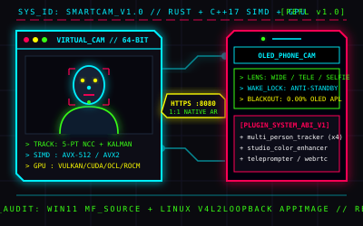

NATIVE RUST + C++17 SIMD + MULTI-VENDOR GPU VIRTUAL CAMERA
SMARTCAM VIRTUAL STUDIO

SIDE-BY-SIDE WEBRTC VERIFICATION
LIVE DUAL-CAMERA TESTBENCH (RAW UVC VS SMARTCAM)
⚠️ INFRARED (IR / WINDOWS HELLO) SENSOR DETECTED
⚠️ INFRARED (IR / WINDOWS HELLO) SENSOR DETECTED